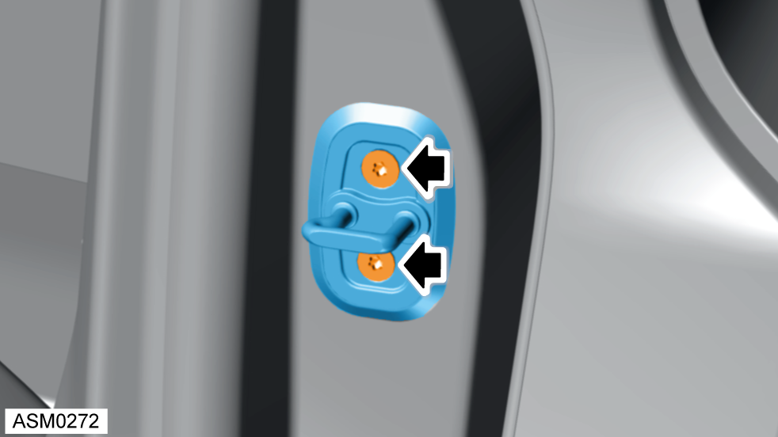
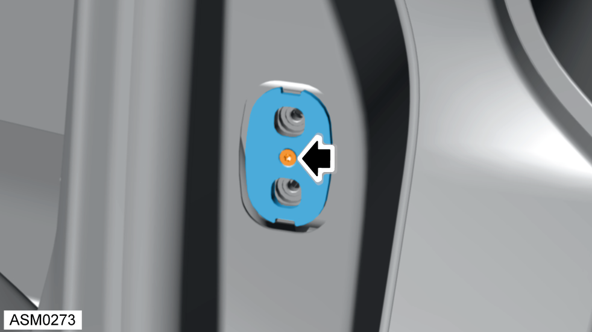
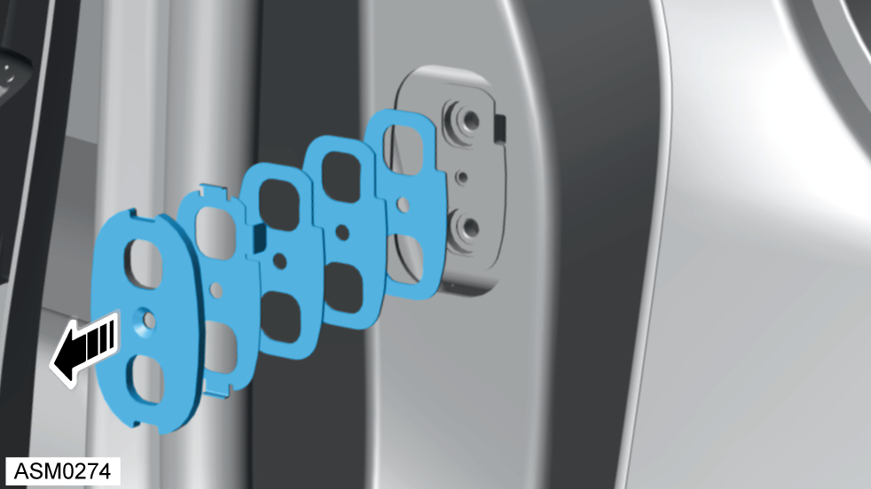

Door Latch Striker - Left Side
Print
Operation Code: 10.17.23-02
Removal
- Open front door - left side.

- Remove M8x35 bolts (x2) securing door latch striker to B pillar. Torque 30 Nm.
NOTE: To aid installation mark position of door latch striker to B pillar.
- Remove the door latch striker and seal from the vehicle.
Installation
- Installation is the reverse of removal procedure except the following:
- Install door latch in the correct position. Use position marked during removal procedure.
- If door latch striker requires shim adjustment perform the following procedure:

- Remove M5x20 bolt securing spacer and shims to B pillar. Torque 6 Nm.

- Remove spacer, shim locator and shims from B pillar.
- Remove or add shims as required.
NOTE: Always record quantity and fitted position of shims.
- Install shim assembly to B pillar then continue with door latch striker installation.
- Check door opens and closes smoothly without excessive contact with door latch striker.